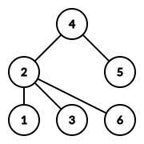
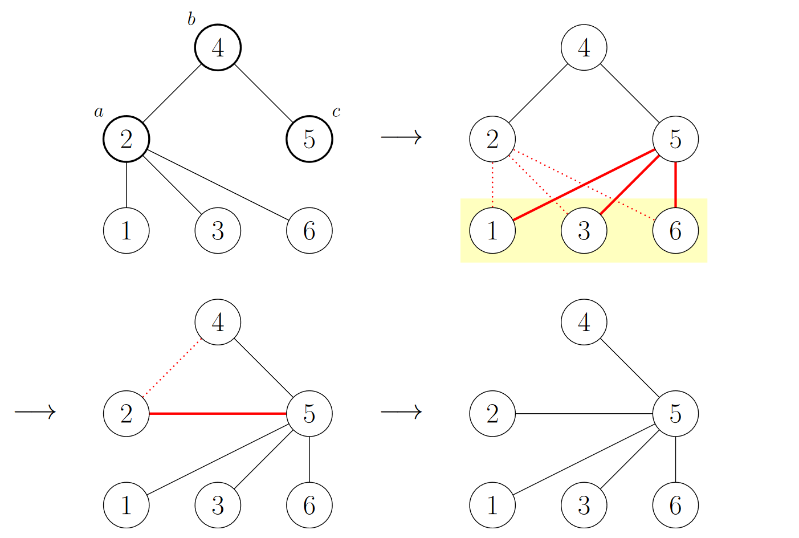

给定一棵 $n$ 个顶点的无根树 $T$，你可以通过若干次操作对它的结构进行修改，每次操作要求如下：
设当前 $T = \left( V, E \right)$，你需要选择 $a, b, c \in V$ 满足 $\left( a, b \right) \in E, \left( b, c \right) \in E, \left( a, c \right) \notin E$。
对于 $\forall d \in N \left( a \right) \setminus \left\{ b \right\}$，删去边 $\left( d, a \right)$，加入边 $\left( d, c \right)$ (由树的性质知 $\left( d, c \right) \notin E$)。
删去边 $\left( a, b \right)$ 并加入边 $\left( a, c \right)$。
举个例子，对下图的树：
取 $a = 2, b = 4, c = 5$，则结果如下：
容易证明在操作后，所得的仍然是一棵树。
现给定初始的 $T$，你需要求出，使得 $T$ 变为星图 $S_{n-1}$ 所需的最少操作次数。
第一行包含一个正整数 $n$ ($3 \leq n \leq 2 \times 10^5$)，表示树的点数。
接下来 $n - 1$ 行，每行两个正整数 $u_i, v_i$ ($1 \leq u_i < v_i \leq n; u_i \neq v_i$)，描述树上的一条边。保证这 $n - 1$ 条边恰好构成一棵树。
输出一行一个整数，表示使得原树变为星图所需的操作次数的最小可能值。可以证明，一定可以在不超过 $10^{18}$ 次操作内完成目标。
考虑换一种语言来描述一次操作：不难发现，其实一次操作中，$a$ 和 $c$ 的地位是完全相同的，可以描述如下：
考虑叠合一对边的操作，可以得到一个比较好的性质：如果 $b$ 是根的话，那么除了 $a, c$ 外，几乎所有的点的深度都没有改变，而 $a, c$ 的深度从 $1, 1$ 变成了 $1, 2$。
但是 $b$ 并不一定是根，因此换根以后深度并不一定会不变，但是一个更一般的不变量是，这些点的深度在 $\hspace{-0.444em} \pmod 2$ 意义下是不会变的！
$\hspace{-0.444em} \pmod 2$ 意义下的深度，其本质就是对树的 $2-$染色。因此，我们把树看作一个二分图，对其就进行 $2-$染色，统计黑白点的个数，分别记为 $A, B$。
那么，根据上述分析可知，一次操作至多使 $A$ 增加 $1$ 或减少 $1$。
因此，想让最终的图变为星图 ($A = 1, B = n - 1$ 或 $A = n - 1, B = 1$)，操作次数的一个下界为 $\min \left\{ A, B \right\} - 1$。
下面说明，这个下界是可以达到的。
首先可以注意到，星图是唯一的满足 $A = 1, B = n - 1$ (或 $A = n - 1, B = 1$) 的树。因此如果我们一旦做到了这个条件，那么这棵树就只有可能是星图了。
那这个操作是否一定可以做到呢？我们只需要证明，只要 $A > 1$，就一定能有使得 $A$ 减少 $1$ 的操作。换句话说，只要至少有两个黑点，那么一定存在一个白点与两个黑点相邻。
而这其实是显然的，因为设这两个黑点为 $a, b$，那么路径 $a \leadsto b$ 上第一个黑点与 $a$ 就满足这个条件。
于是，这道题的答案就等于 $\min \left\{ A, B \right\} - 1$，时间复杂度 $O \left( n \right)$ (只需要 dfs 一遍就可以了)。
#include <bits/stdc++.h>
using std::cin;
using std::cout;
const int N = 200054, M = N * 2;
int n, E = 0;
int to[M], first[N], next[M];
int cc[2];
inline void addedge(int u, int v) {
to[++E] = v, next[E] = first[u], first[u] = E;
to[++E] = u, next[E] = first[v], first[v] = E;
}
void dfs(int x, int px = 0, int d = 0) {
int i, y; ++cc[d];
for (i = first[x]; i; i = next[i])
if ((y = to[i]) != px)
dfs(y, x, d ^ 1);
}
int main() {
int i, u, v;
std::ios::sync_with_stdio(false), cin.tie(NULL);
cin >> n;
for (i = 1; i < n; ++i) cin >> u >> v, addedge(u, v);
dfs(1);
cout << std::min(cc[0], cc[1]) - 1 << '\n';
return 0;
}
无